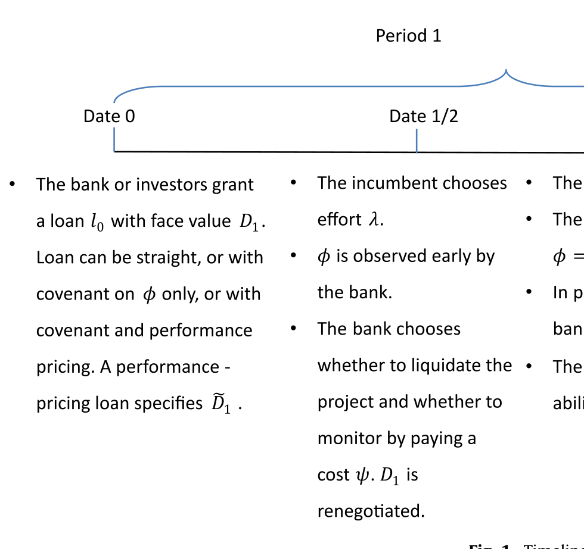
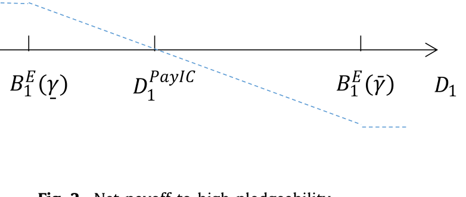
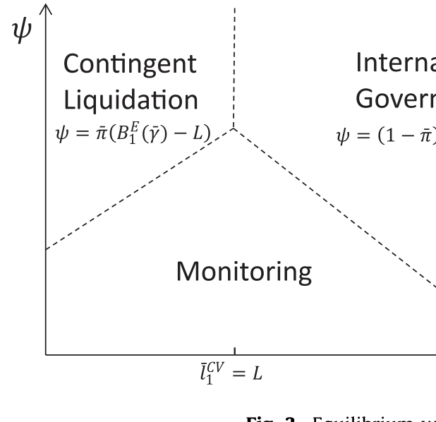
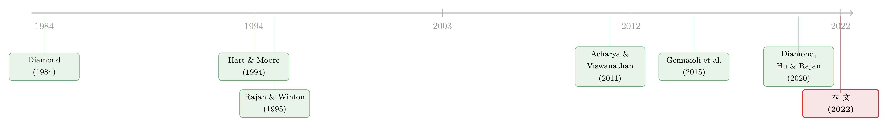

一笔贷款长成什么样，取决于『未来谁来接盘』
本文读的是 Diamond, Hu & Rajan (2022, Journal of Financial Economics)：他们用一个极简的两期模型说明，企业借钱的「形态」——是找银行还是走市场、是带契约还是「契约从简」、银行自己又加多少杠杆——并不是企业性质决定的，而是被一个外生变量牵着走：预期流动性 (prospective liquidity)，即未来潜在买家有多大的「接盘」能力。它和企业自己选择的可质押性 (pledgeability) 相互作用，于是同一家公司，在金融周期的不同位置，会借到完全不同的钱。
1 一个被忽略的问题
金融周期一转，借贷的样子就全变了。
这件事，凡是看过信贷数据的人都有直觉。繁荣时银行退居二线，市场化的「一臂之距 (arm's length)」借贷大行其道，契约越来越少，杠杆越加越高，covenant-lite（轻契约）贷款满天飞；萧条时银行又回来了，盯得紧、管得严、契约一条接一条。实证文献已经把这些事实翻来覆去地记录过很多遍。
可是，为什么？为什么有的时候是银行、有的时候是市场？为什么有的合约写满契约、有的几乎裸贷？为什么银行自己的资本结构也跟着周期一起呼吸——景气时它敢把杠杆加到天上去，萧条时又老老实实留着资本？
这些问题，实证给了我们一大堆「是什么」，理论却很少告诉我们「为什么会这样、什么时候会这样」。Diamond、Hu 与 Rajan 这篇论文，正是想用一个尽可能省俭 (parsimonious) 的模型，把这一连串现象一根线串起来。
而这根线，出乎意料地朴素：它不在企业内部，而在企业之外——未来会有谁、带着多少钱，来接你这家公司的盘。
2 故事的两个主角：可质押性与预期流动性
要理解这篇论文，先要分清它的两个主角。
一家公司（论文里就叫「the firm」，一项会产生现金流的资产）在 t=0 时被拍卖。一群有经营能力的专家 (experts) 互相竞价，谁出价高谁就借钱买下它，成为在位经理 (incumbent)。专家自己没有本钱（论文设 ω₀ = 0，纯属归一化），靠的全是抵押这家公司去借的钱。
那么，债权人凭什么相信能拿回钱？论文说，债权人手里有两种控制权，对应两条还款通道。
第一条通道：直接扣住现金流。 定义可质押性 (pledgeability) γ₂ 为「第 2 期现金流 C₂ 中能被法庭核实、从而能直接划给债权人的比例」。于是在位者最多能承诺偿还 γ₂C₂。关键在于，γ₂ 不是天上掉下来的——它是在位者提前一期主动选择的：请一个声誉好的会计师、设立托管账户、简化股权结构、安排一个独立的董事会……本质上，是她亲手「堵上」那些把现金流偷偷转走的暗管。
第二条通道：抢过来卖掉。 如果到期没还够，债权人有权把整家公司没收、拍卖给出价最高的专家。注意这条通道值多少钱，完全取决于未来有谁来买。
而这，就引出了第二位主角。论文假设：在位者有 1−θ 的概率，在第 1 期发现自己「能力过时了」，不再适合经营这家公司，于是想把它卖掉。这时市场上有的是别的专家来接盘。这些非在位专家在 t=1 时手里有多少净财富，论文称之为预期流动性 (prospective liquidity) ω₁——它外生于模型，由宏观环境决定（经济繁荣、货币宽松、信用宽松、金融发展，甚至是「非理性繁荣」，都会推高它）。
θ 衡量公司的稳定性 (stability)，γ₂ ∈ {γ, γ̄} 取两个极端值（线性结构让我们只需关心端点），0 ≤ γ < γ̄ < 1。

Figure 1: Timeline
3 把核心写成一个方程
现在，最关键的一步来了。
未来那个接盘的非在位专家，愿意出多少钱买这家公司？他的出价，一头被公司的基本面价值（持续经营价值）C₂ 顶住——再傻的人也不会出超过公司本身值的钱；另一头被他的支付能力顶住——他能拿出自己的 ω₁，再加上能抵押这家公司的可质押现金流 γ₂C₂ 去借的钱。
于是，这家公司在 t=1 的转售价值（也就是未来的出价）可以写成：
别看它简单，这一个 min 几乎把全文都装进去了。
首先，当预期流动性 ω₁ 不高时，ω₁ + γ₂C₂ < C₂，出价被「能借多少」卡住。这时提高可质押性 γ₂ 是有用的：γ₂ 一升，未来出价 B₁ 就跟着升，债权人愿意上前借给在位者的钱也就更多。预期流动性与可质押性，共同决定了企业的债务承受力 (debt capacity)。
接着，一个自然的问题是：那是不是 ω₁ 越高越好、γ₂ 越高越好？
不全是。注意那个 min：当 ω₁ 高到 ω₁ ≥ (1−γ₂)C₂ 时，B₁ = C₂ 被基本面价值锁死。此时非在位专家光靠自己的钱就买得起整家公司，根本不需要抵押公司的现金流。于是——可质押性变得无关紧要了。论文把这句话说得很漂亮：
极高的未来流动性，会把可质押性在「提升还款」上的作用挤出去 (crowd out)。
这就是整个故事的发动机：ω₁ 从低到高地变化，会让 γ₂ 的价值从「至关重要」一路滑到「无足轻重」，而借贷的形态，正是被这个滑动牵着走的。
4 可质押性的「双刃剑」：一种不一样的债务积压
但真正精妙的一步，在于可质押性对已经负债的在位者来说，是把双刃剑。
设想在位者头上已经压着要偿还的债务 D₁。她若提高 γ₂，固然能抬高未来出价、方便自己再融资；可同一个动作，也让原来那个债权人的索取权变强了——因为债权人有权在没拿够钱时没收并拍卖公司。可质押性越高，公司被卖掉时债权人能榨出的钱越多。于是在位者哪怕没失去能力、想继续经营，也得「从债权人手里把公司买回来」：要么全额还清旧债，要么在拍卖里把别的专家反超出价。
于是出现了一个反转：
在位者留在控制权上的概率越高（
θ越大）、未偿债务越高，她主动提高可质押性的激励就越低。
换句话说，当「需要高可质押性来支撑债务执行」时，未偿债务反而不能太高——否则在位者干脆躺平，不去改善治理。论文点明，这是一种债务积压 (debt overhang)，但和教科书里 Myers 那种「不愿投正 NPV 项目」的积压不同：这里积压的是改善治理、提高可质押性这件事。现有外部索取权相对于新融资需求越大，改善治理的激励就越弱。

Figure 2: Net payoffto high pledgeability
如图 2，高可质押性带给在位者的净收益，会随着她肩上债务的加重而下滑，甚至转负。这条曲线，正是后面所有合约选择的微观基础。
（关于「承诺」如何反过来束缚中间商、以及短期债务为什么能治好这种食言冲动，可参见《中间商管不住自己的手——为什么「短债」反而治好了银行的食言》，那篇正出自本文作者之一 Hu 的合作研究。）
5 于是，借贷的形态随 ω₁ 一路变形
把上面两件事拼起来——可质押性的价值随 ω₁ 升高而被挤出、提高可质押性又受债务积压的牵制——我们就能跟着预期流动性从低到高，看借贷的样子一段段地「变形」。竞争会逼着专家选用那种能借到最多钱的合约与债权人，所以胜出的形态在每一段都不同。
第一段：预期流动性很低 —— 带契约的银行贷款。
此时未来出价低迷，公司的早期清算价值 (early liquidation value) 反而超过预期的持续经营出价。早期清算不是把厂房设备零敲碎卖，它包含了「尚未投下去的那部分贷款」，而且——援引 Hart & Moore (1994) 的洞见——它不依赖专家的人力资本。正因如此，银行「我就清算你」的威胁是可信的。银行能持续接触借款人、能早早抓到契约违约（比如财报迟交）、能进一步监督、能提前清算。这份可信的威胁，逼着在位者即便面对很高的还款，也宁可把 γ₂ 设高，免得被清算。
第二段：流动性上升 —— 一臂之距登场。
当 ω₁ 升到持续经营价值超过早期清算价值时，银行的清算威胁不再可信，它早期核查、监督的本事一下子贬值了。但借贷并不会停止：一臂之距的债权人改用另一招——限制直接债务（直债）的额度。面对只剩中等的旧债偿付、又可能要卖公司或再融资，在位者会自己选择高可质押性。银行的监督让位给了市场化的纪律。
第三段：高流动性 + 总量不确定性 —— 业绩定价债登场。
有意思的是，在总量不确定性 (aggregate uncertainty) 很小时，业绩定价债 (performance pricing debt)——也就是利率随契约信号自动调整的合约——虽然更灵活，却一分钱也多借不到，只要执行它有一点点交易成本，就会被直债压倒。但一旦总量不确定性足够大、预期流动性又高，且总量状态无法直接写进合约时，业绩定价债就能比直债借到更多：契约一违约、利率自动跳升，这反而给了在位者更强的动力去提高 γ₂，从而借到更多。
第四段：流动性极高 —— covenant-lite 与裸杠杆。
当 ω₁ 高到那个 min 被 C₂ 锁死，可质押性对还款几乎没有边际作用。维持提高可质押性所需的「债务上限」反而成了累赘。于是专家直接上高杠杆，根本不打算去提高 γ₂；投资者也乐得发放大额、无契约、无监督的「covenant-lite」贷款，单单依靠高预期流动性来保证还款。

Figure 3: Equilibrium
如图 3，从左到右就是 ω₁ 由低到高：监督型银行贷款 → 限额直债 → 业绩定价债 → 裸杠杆 covenant-lite。同一家公司、同样的现金流，只因身处周期的不同位置，借到的钱长得截然不同。
6 顺带，银行的资本结构也被定了
故事还有一个漂亮的尾巴：银行该加多少杠杆，也是被这条线决定的。
逻辑是这样的：当一笔贷款需要银行付出代价高、又不可观察的努力（信息获取、监督），银行就必须「在桌上留点筹码 (skin in the game)」——也就是对自己放出的贷款持有一份头寸，否则它没有激励去真的监督。需要银行提供有成本的中介服务时，银行资本必须为正。
可一旦预期流动性升高、银行能转去做那种「任何被动投资者都能做」的一臂之距贷款，它就退化成一个纯粹的过手管道 (pass-through)：把投资者的钱原样转给企业，再把企业还的钱原样转回去。它不再需要任何「桌上的筹码」，也就不需要银行资本。等价地说，专家此时干脆被投资者通过市场化贷款或债券直接融资了。
于是论文给出一个统一的画面：高预期流动性的时期，就是大量一臂之距借贷、高企业杠杆、和高银行杠杆同时出现的时期。 把这句话放到 2007–2009 全球金融危机的「繁荣前夜」去读，格外刺眼——那正是一个 ω₁ 被推到极高、人人裸杠杆、银行变身过手管道的世界。（关于繁荣如何悄悄孕育一场被推迟的危机，可参见《音乐停了，谁还在跳舞？》。）
这篇论文与 Hanson et al. (2015) 做出了相似的预测——资产流动性越高、越多由影子银行式的过手机构来融资——但解释不同：他们的机制来自中介负债端的结构，本文的机制来自资产本身的预期流动性。
7 文献脉络
把这篇论文放回它生长的那棵树上，脉络其实相当清晰。
最早，是 Diamond (1984) 把银行刻画为「受托监督者 (delegated monitor)」，回答了「为什么要有银行」；Diamond (1991) 进一步讨论企业在银行贷款与直接发债之间的取舍。接着，Hart & Moore (1994) 提出基于人力资本不可让渡的债务理论——这给了本文一块关键砖：清算价值之所以能当可信威胁，正因为它不依赖在位者的人力资本。然后，Rajan & Winton (1995) 论证了契约与抵押品是激励债权人去监督的工具，这正是本文「契约—监督」一段的源头。
再往后，一条「流动性 → 融资能力」的线索浮现：Eisfeldt & Rampini (2006, 2008) 研究资本再配置与流动性，Acharya & Viswanathan (2011) 说明高杠杆主体的借贷如何依赖流动性，而 Gennaioli、Shleifer & Vishny (2015) 则点出买方的流动性会抬高资产转售价值——本文那个 min{C₂, ω₁+γ₂C₂} 的精神，正脱胎于此。
而真正的直接前身，是同三位作者的 Diamond, Hu & Rajan (2020, Journal of Finance)，那篇讲产业流动性与企业可质押性选择的「融资周期」。本文是它的延伸：把焦点从「企业选择」更明确地推向「环境如何决定借贷形态、债权人身份与银行杠杆」。

8 评论与延伸（Q&A + 研究方向）
(a) 几个可能的疑问
Q：「预期流动性」和我们常说的「资产流动性 / 市场流动性」是一回事吗？
不是。这里的
ω₁特指未来潜在买家（其他专家）的净财富——是「接盘人有多有钱」，而非「资产好不好卖、买卖价差大不大」。它是宏观环境的产物，外生于模型。正因为它衡量的是未来的接盘能力，论文才反复强调「prospective」。
Q：为什么可质押性要「提前一期」选，而不是临时拍板？
因为改善治理需要时间：请一个声誉好的审计师要发招募、做尽调、面试、再敲定，会计制度的升级也不可能一夜完成。这个「需要时间」的设定让可质押性成了一个有承诺意味的状态变量，从而能与今天的债务发生冲突——双刃剑才成立。论文在 5.7 节也讨论了去掉这一假设的后果。
Q：这种「债务积压」和 Myers 那种有什么不同？
传统积压是「已有债务让股东不愿投正 NPV 的新项目」。这里积压的对象换了：是改善治理、提高可质押性这件事。现有外部索取权越重，在位者越不愿去提高
γ₂，因为收益大半被旧债权人拿走。机制相通，标的不同。
Q：业绩定价债既然更灵活，为什么不是永远更优？
在总量不确定性很小时，它带来的「灵活性」无处发挥，借款额度并不增加，只要执行有一丝交易成本就会被直债压倒。它的优势只在总量不确定性足够大、且总量状态无法直接写进合约时才显现——此时「违约即自动加息」恰好补上了合约的缺口，给了在位者更强的提质押激励。这是一个相当克制、也相当诚实的结论。
Q：模型说高流动性时银行变「过手管道」、杠杆飙升，这是在给 GFC 之前的高杠杆「洗白」吗？
恰恰相反，它是在解释为什么繁荣本身会内生地催出高杠杆与去监督。高
ω₁让监督失去价值、让裸杠杆成为均衡选择，于是系统在繁荣顶点最脆弱。它不是辩护，而是把「繁荣孕育危机」写成了一个机制。
Q：这是纯理论，没有数据，结论可信吗？
作为理论它是自洽且省俭的，预测也与实证规律对得上（银行 vs 市场、契约多寡、银行杠杆顺周期）。但它确实没有做实证检验——所有「量级」都是阈值条件（如
e₁ < 0.5、λ̄(1−θ) > λ、ω₁ ≥ (1−γ₂)C₂），而非估计出来的系数。作者也明说，要把模型带到数据上，需要给ω₁找一个可观测的代理。
(b) 几个可能的研究问题与提案
1. 给「预期流动性」找一个干净的代理，去检验借贷形态的变形。
【经济故事】模型最锋利的预测是：ω₁ 升高 → 银行让位于市场、契约变少、银行杠杆升高。若能用「行业内潜在买家（同业、PE）的可投资本」或「行业并购市场的活跃度」构造 ω₁ 的代理，就能直接检验这条曲线。
【可行性】中。数据上可用 Compustat + 并购数据库 + Dealscan 贷款契约（契约数量、performance pricing 条款）。识别难点在于 ω₁ 与企业自身基本面共动，需要找到只动「未来接盘人财富」而不动「本企业现金流」的变化（如外生的行业资金涌入）。
2. 把这套机制搬到公司债 / 信用市场的「契约稀释」上。 【经济故事】covenant-lite 在繁荣期泛滥，本文给了它一个理论解释：高预期流动性把可质押性挤出，监督失去价值。可以检验：在二级市场流动性（潜在接盘买家充裕）更高的行业 / 时点，新发债的契约强度是否更低、且事后违约损失更高。 【可行性】高。公司债契约（Mergent FISD / Moody's）、二级市场流动性指标（TRACE）都现成。这一方向与本博客关注的公司债流动性主题高度契合（参见《把「成交价」从「成交量」里解放出来》）。
3. 外资接盘人与「跨境预期流动性」。
【经济故事】若本国资产的潜在买家越来越多来自海外（外资 PE、跨境并购），那么 ω₁ 就有了一个「外资」成分。本文逻辑预测：外资接盘能力上升的行业，本土银行监督的价值下降、企业杠杆上升。
【可行性】中。需要跨境并购 / 外资持股数据来度量行业层面的外资接盘能力。识别上要小心外资进入与行业景气的内生性，可借助外资母国的流动性冲击作为工具。
4. 银行资本顺周期性的微观检验。 【经济故事】模型预测：当银行做的是「需要监督」的贷款时资本为正，做过手贷款时资本可降。可检验银行贷款组合的监督密度与其资本 / 杠杆之间，是否随周期呈现模型预言的关系。 【可行性】中。需要把银行贷款按「是否需要监督」分类（如关系型 vs 交易型、有无 maintenance covenant），再与银行资本比率匹配。数据来自监管报表 + 银团贷款。
9 我的判断
这篇论文最大的贡献，是用一个外生变量（预期流动性）把一长串看似零散的「金融周期 stylized facts」——银行 vs 市场、契约多寡、业绩定价、企业杠杆、银行杠杆——内生地、统一地串了起来，而且模型省俭到几乎只有一个 min 在驱动。这种「以简驭繁」的优雅，正是好理论该有的样子。它对 covenant-lite 与繁荣期银行去监督的解释，也给了 GFC 前夜一个机制化的读法。
对识别的担忧也很直接：全文没有一个数字是估计出来的。所有结论都是比较静态下的阈值排序，可信度依赖于几个关键假设——尤其是「可质押性提前一期选、且耗时」和「在位者总能在拍卖里出价」。后一条若放松（即能禁止在位者竞拍），债务承受力会大幅上升，整套结论的张力也会松动；作者自己也承认这点。此外，ω₁ 外生且无法签约，是模型成立的支点，但也是它最难被数据验证的地方。
我最想看到的后续，是有人真的把 ω₁ 量出来，然后去看「银行让位于市场」这条曲线是不是真的存在、拐点是不是真的落在「持续经营价值反超清算价值」的地方。在公司债与外资接盘这两个方向上，这件事是 doable 的——而那将把一篇漂亮的理论，变成一块能被证伪的实证基石。
参考文献
- Acharya, V., Viswanathan, S. (2011). Leverage, moral hazard, and liquidity. Journal of Finance 66, 99–138.
- Diamond, D.W. (1984). Financial intermediation and delegated monitoring. Review of Economic Studies 51, 393–414.
- Diamond, D.W. (1991). Monitoring and reputation: the choice between bank loans and directly placed debt. Journal of Political Economy 99, 689–721.
- Diamond, D.W., Hu, Y., Rajan, R.G. (2020). Pledgeability, industry liquidity, and financing cycles. Journal of Finance 75(1), 419–461.
- Diamond, D.W., Hu, Y., Rajan, R.G. (2022). Liquidity, pledgeability, and the nature of lending. Journal of Financial Economics 143, 1275–1294.
- Eisfeldt, A., Rampini, A. (2006). Capital reallocation and liquidity. Journal of Monetary Economics 53, 369–399.
- Gennaioli, N., Shleifer, A., Vishny, R. (2015). Neglected risks: the psychology of financial crises. American Economic Review 105(5), 310–314.
- Hanson, S., Shleifer, A., Stein, J., Vishny, R. (2015). Banks as patient fixed-income investors. Journal of Financial Economics 117(3), 449–469.
- Hart, O., Moore, J. (1994). A theory of debt based on the inalienability of human capital. Quarterly Journal of Economics 109, 841–879.
- Rajan, R.G., Winton, A. (1995). Covenants and collateral as incentives to monitor. Journal of Finance 50, 1113–1146.